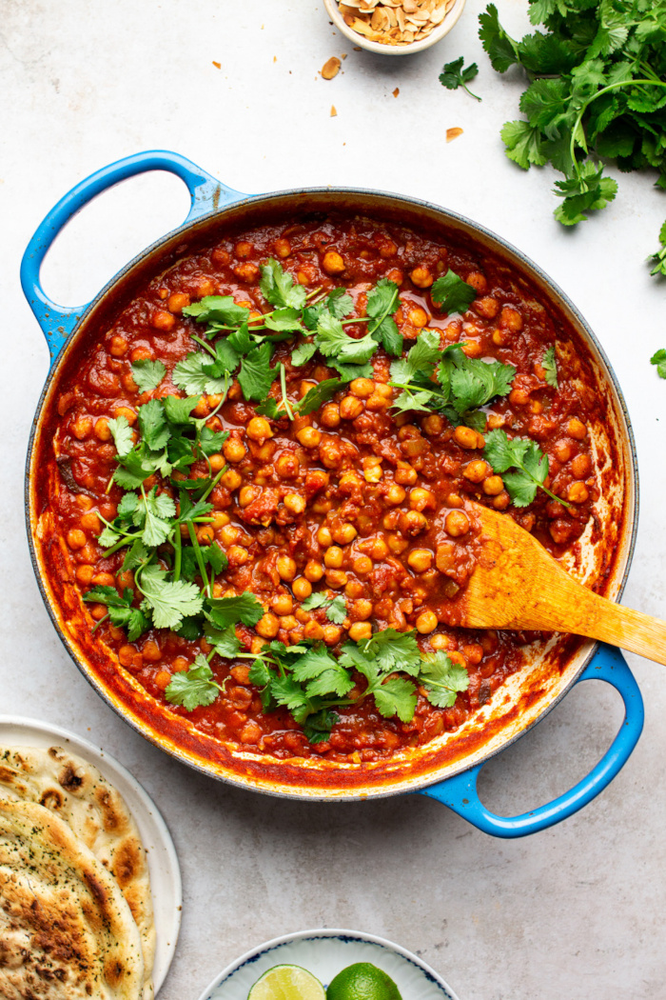

Speedy Chana Masala

Savory Indian Chickpeas
Featuring a healthy, well seasoned mixture of protein and fiber rich chickpeas, carmelized onions
and zesty tomatoes simmered in warm indian spices, chana masala is a simple yet
satisfying plant-based meal.
Serve with warm naan bread to soak up the sauce.
Ingredients
- 1 tbsp coconut oil or olive oil
- 1 1/2 cups chopped onions
- 1 tbsp minced fresh gingerroot
- 2 tsp minced garlic
- 1 tsp curry powder
- 1 tsp garam masala spice blend
- 1 tsp ground cumin
- 1/2 tsp each ground coriander and chili powder
- 1 can (28 oz/798 mL) no-salt-added diced tomatoes (with liquid)
- 1 can (19 oz/540 mL) no-salt-added chickpeas, drained, and rinsed
- 3 tbsp minced fresh cilantro
- Sea salt to taste
Steps
- Heat coconut oil in a medium, non-stick pot over medium heat. Add onions. Cook and stir until
onions are very tender and begin to carmalize, about 5 minutes. Don't rush and don't burn
them!
- Add gingerroot, garlic, curry powder, garam masala, cumin, coriander, and chili powder.
Cook and stir for 30 seconds. Add tomatoes with their liquid. Bring mixture to a boil.
Reduce heat to low, cover and simmer for 10 minutes.
- Stir in chickpeas and simmer for 5 more minutes. Remove from heat and add cilantro and
salt to taste. Serve hot over cooked brown rice, quinoa or your favorite grain.
- Makes 4 meal-sized servings or 6 side-dish servings.